O bicho nunca morre
Ele não adoece, não fica com fome e não some. No pior dia da sua semana ele continua ali, respirando, esperando você voltar.
06:20 · o dia começa
Um app de foco e tempo de tela com um companheiro que reage a você. Ele nunca morre, nunca cobra e nunca te culpa. Você faz suas sessões; a cena responde. O número do seu tempo de tela é contabilizado com honestidade — e você pode discordar dele.
iOS e Android pt · en · es · zh MVP em teste fechado
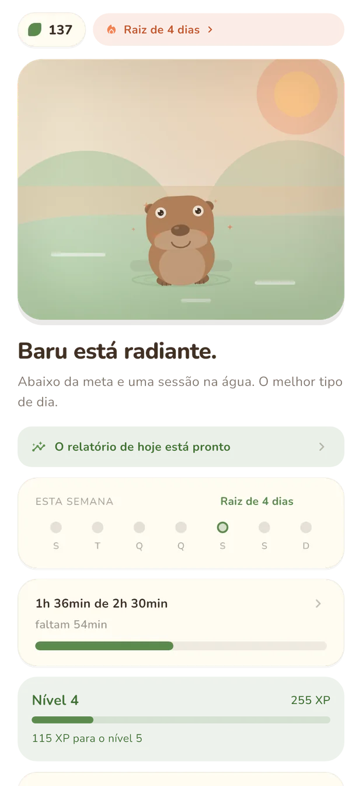
09:40 · a regra que não se quebra
Quase todo app de foco funciona com uma ameaça: perca a sessão e algo seu é destruído. Baru não tem ameaça nenhuma. Não existe punição, decaimento de progresso, perda de moeda ou frase acusatória em lugar algum do produto — isso é regra escrita, não boa intenção.
Ele não adoece, não fica com fome e não some. No pior dia da sua semana ele continua ali, respirando, esperando você voltar.
Abandonar uma sessão significa sair sem a recompensa daquela sessão. Nada além disso é retirado de você.
Recusar a permissão de uso não degrada o app. Sem ela, o humor vem só das suas sessões de foco, e nenhum número é inventado.
Abandonar uma sessão = sem recompensa, nada mais.contrato de produto · regra 1 · sem punição
12:40 · o número
Somar o tempo que cada app passou aberto produz um número gordo e injusto: ele inclui o podcast no bolso, o teclado, a tela de bloqueio e o próprio app de foco. Baru conta só o intervalo em que a tela está ligada, o aparelho está desbloqueado e um app que conta está na frente.
| Categoria | O que é | Meta |
|---|---|---|
| Dispersivo | social, vídeo curto, jogo | entra |
| Neutro | mensagem, navegador, mapa | entra |
| Produtivo | leitura, estudo, trabalho | fora |
| Passivo | áudio | fora |
Música com a tela apagada nunca conta. Launcher, teclado, telas do sistema, o discador durante uma chamada e o próprio Baru nunca contam. E se você discordar da categoria de um app, troque: a sua classificação vale mais que a nossa, fica salva e vai junto para os outros aparelhos.
a meta Sua média informada menos 25%, arredondada para o múltiplo de 15 minutos mais próximo. Nada de “zere seu celular”.
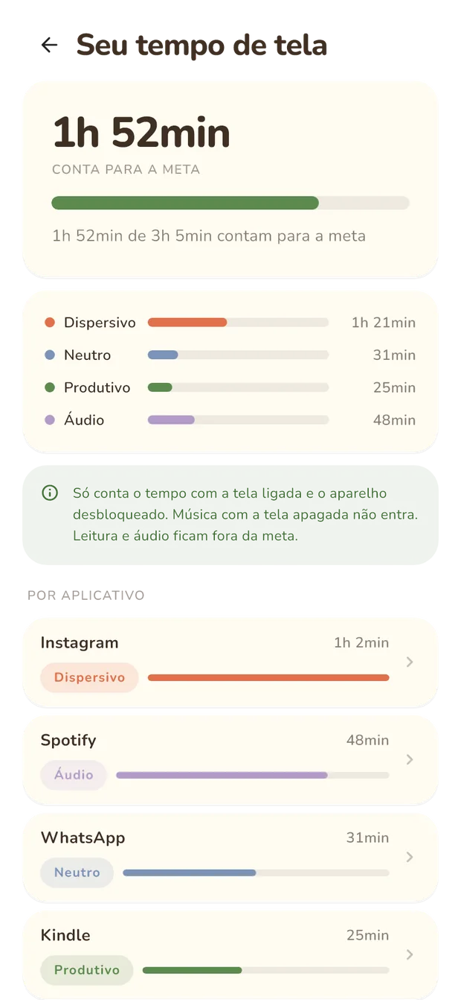
15:10 · o estado
Você não abre um painel para saber como foi seu dia: você olha o bicho. A cena carrega o estado e uma única frase diz em palavras. São cinco humores, em ordem estrita de precedência — o primeiro que se aplica é o que você vê.
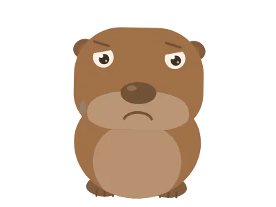
Você desistiu de uma sessão hoje, ou faz dois dias que não aparece. Ele espera. Só isso.
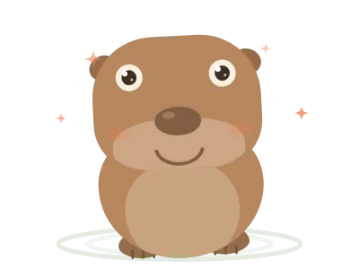
Abaixo da meta e pelo menos uma sessão completa. O melhor tipo de dia — e ele vai para a água.
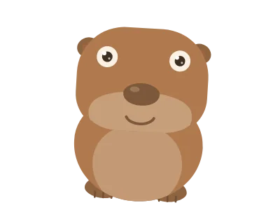
Uma das duas coisas aconteceu: você ficou abaixo da meta ou fechou uma sessão. Já vale.
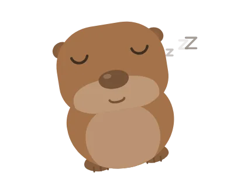
Passou da meta e o dia foi longo. Ele cochila. Nenhuma frase te cobra por isso.
17:50 · a hora
A cena conhece o relógio. O céu troca de gradiente, o sol desce e vira lua com halo, as colinas perdem a cor e a água escurece. Nada disso é enfeite: é o que faz voltar ao app às onze da noite parecer outra coisa.
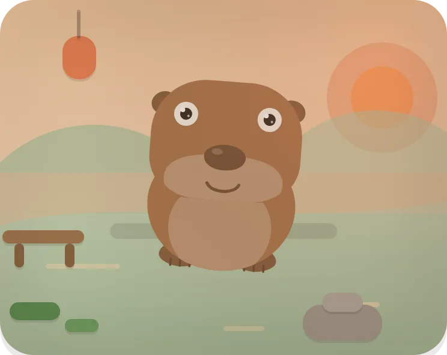
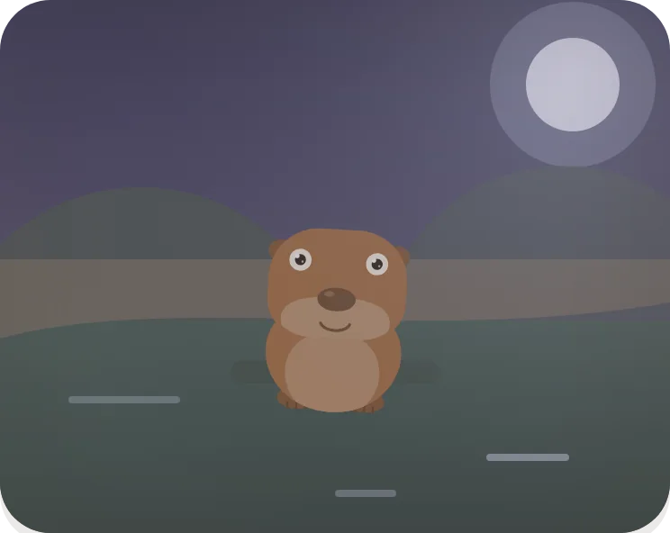
capturas reais Seis da manhã. Céu quente, sol baixo, água clara — e a mesma capivara de sempre no meio da cena.
19:30 · o caminho
A trilha é visível desde o primeiro dia: cada marco tem requisito claro, recompensa concreta e prévia do que vem. Marco conquistado nunca é retirado, e as outras espécies se desbloqueiam por marco — nunca por dinheiro.
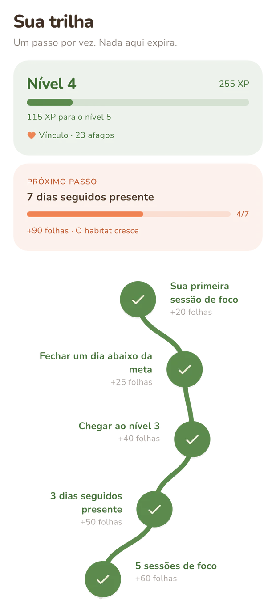
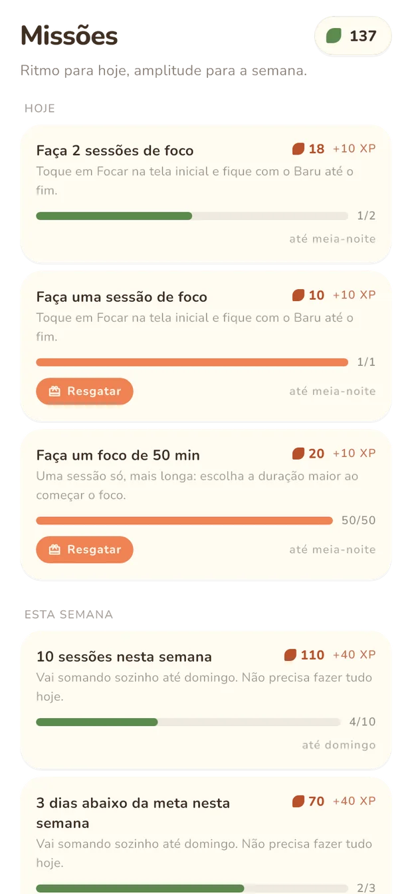
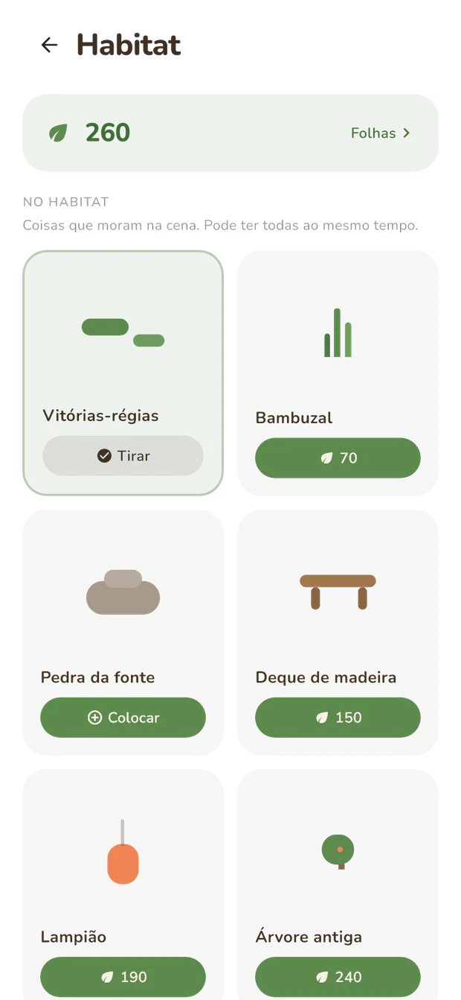
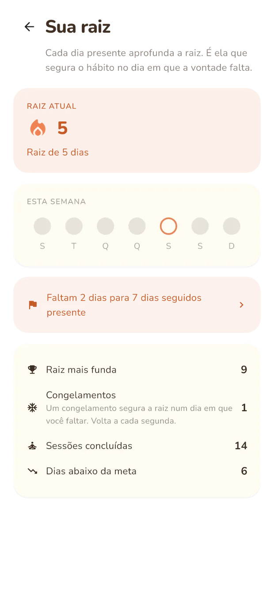
o que você vê O caminho com nós grandes, linha sólida no trecho já feito, tracejada no que falta e “você está aqui” no passo atual.
| Sessão de 25 minutos | 10 folhas |
| Sessão de 50 minutos | 25 folhas |
| Sessão de 90 minutos | 50 folhas |
| Sessão livre | ½ folha por minuto |
| Fechar o dia abaixo da meta | +15 folhas |
Folha se gasta na loja, e comprar é a única coisa que muda a cena: o item cai no habitat com mola e passa a projetar sombra. Três missões diárias e duas semanais, sorteadas do mesmo jeito em qualquer aparelho seu. Missão que expira à meia-noite não pune ninguém.
21:00 · o que sai do aparelho
Um app que mede tempo de tela pede uma permissão grande e merece explicar o que faz com ela. Aqui está, sem letra miúda.
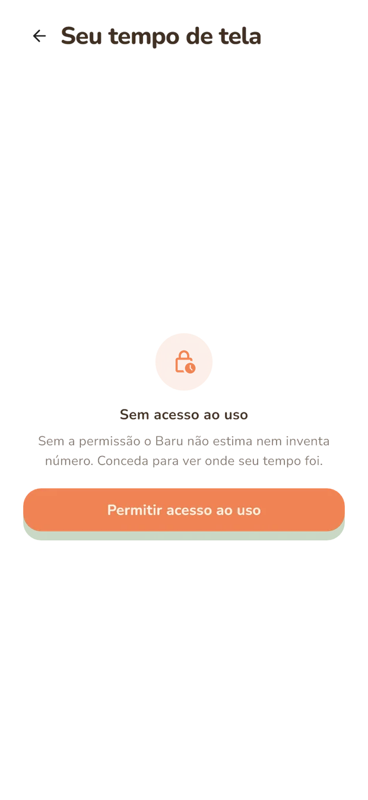
Quanto tempo cada aplicativo ficou em primeiro plano com a tela ligada. É o número que o próprio sistema operacional já mantém.
Mensagens, telas, digitação, conteúdo, histórico de navegação. Nada disso passa perto do app.
O app não estima nem inventa nada. Mostra um estado vazio honesto, com um caminho de um toque para conceder depois — ou nunca.
Ficam primeiro no aparelho e sincronizam com a sua conta. “Apagar meus dados” apaga aqui e no servidor, e fica em Ajustes → Sua conta.
quatro idiomas de primeira classe
A escolha do idioma é o primeiro passo do onboarding e vive nos ajustes. Nenhum dos quatro é tradução de segunda: toda frase nova nasce nos quatro ao mesmo tempo, e um teste quebra o build se faltar uma.
22:30 · boa noite
MVP em teste fechado
Ainda estamos fechando a última milha antes das lojas. Deixe seu e-mail e você é avisado quando o teste aberto começar — uma mensagem, sem newsletter.
o elenco
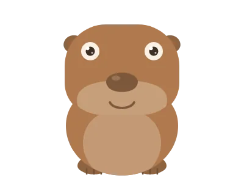
Barucapivara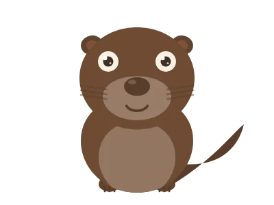
Riolontra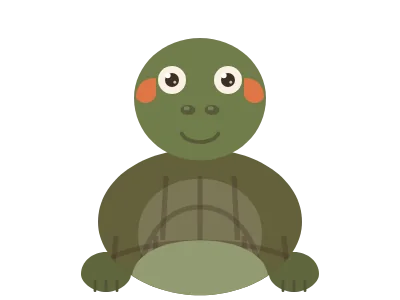
Tocotartaruga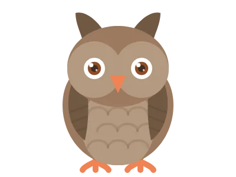
NinacorujaUm quiz de três perguntas escolhe o seu no onboarding. Dá para trocar depois, e o nome é seu para escrever.
Baru · app de foco e redução de tempo de tela para iOS e Android. Sete dias de teste grátis; depois, plano mensal ou anual, com aviso 24 horas antes de o teste acabar.
A medição de tempo de tela está disponível no Android. No iOS ela depende de um entitlement da Apple ainda em avaliação — o restante do app funciona igual nas duas plataformas.